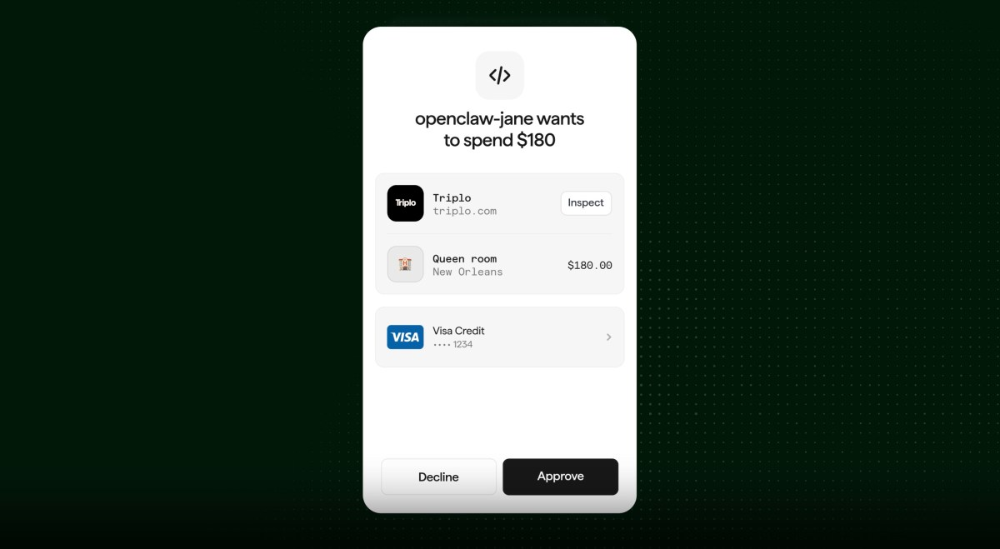
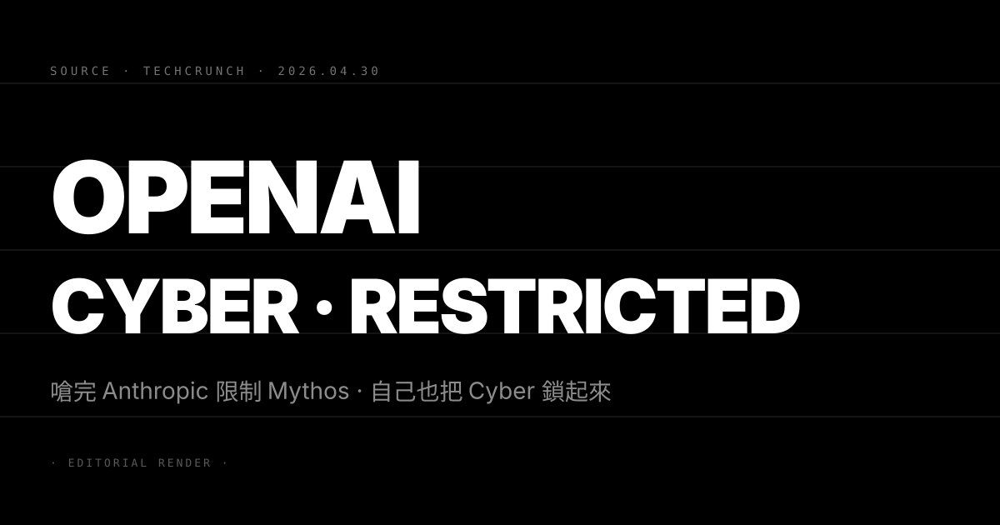
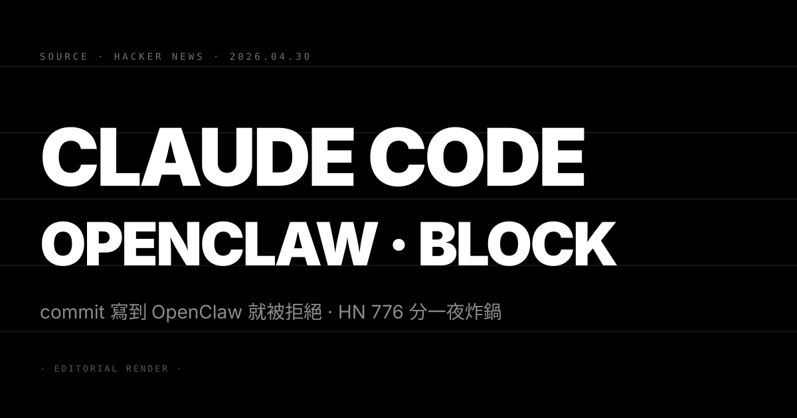
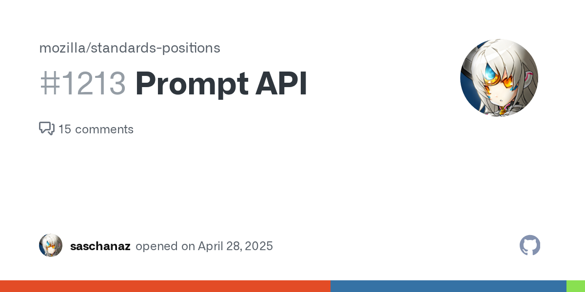

N°28 Stripe Link 數位錢包接通 AI agent · agentic commerce 金流底座到位

Pin · 金流層先到位，agent 直接拿到刷卡權限。
發生什麼
Stripe 4 月 30 日正式對外推出 Link 為「自治 AI agent 友善」的數位錢包。使用者把信用卡、銀行帳戶、訂閱紀錄一次接進 Link 之後，可在每筆交易設置授權上限與品類白名單，AI agent 在約定範圍內可不經人工點擊直接完成支付，超出範圍會觸發 approval flow 再回到使用者手機。
Stripe 在發布頁特別點名應用情境：旅遊行程 agent 直接訂機票與旅館；研究 agent 自動續訂受限期刊；coding agent 採購 GPU 雲服務。Link 的金流走 Stripe Payments 既有 rails，等於把現成的反詐欺、退款、爭議仲裁機制全帶到 agentic commerce 場景。
定價方面 Link 對 agent 觸發的交易採與正常卡別相同的 interchange，Stripe 不額外加收 agent surcharge。對開發者端另外開出 Agent SDK，允許 agent 在 OAuth-style flow 內帶著一張可被收回的 token 進行付款。
為什麼重要
第一，agentic commerce 缺的最後一塊「合規金流」被補上。過去 12 個月各家 agent demo 都卡在「機票訂得到、可是付不了款」這條線。Stripe 把授權上限、白名單與爭議流程一次內建，意味著企業合規部門不再有第一時間擋下 agent 採購的合理理由。
第二，這把把 PayPal、Apple Pay、Adyen 直接拖進同一張競技場。Stripe 一旦把 agent 友善這個 framing 立起來，其他金流玩家在 6 個月內都得交出對等規格，否則企業客戶會把預算搬家。
我們的判斷
三個看點：
(1) Agent SDK 會迅速被 Cursor、Manus、Devin 這類 agent 平台整合。這條 stack 上面誰先把「我能幫你買東西」做好端到端，誰先在企業 Q3 採購季拿到訂單。
(2) 信用卡發卡組織會被迫公布 agent 交易爭議規則。Visa 與 Mastercard 在 Stripe 出招後一定要表態：agent 自主下單若是詐欺，責任歸誰；歸發卡行還是歸 agent 平台，是接下來合約談判桌上的硬議題。
(3) 「Stripe Link for Agents」會成為 Stripe 對 enterprise 的 hook 產品。Stripe 過去靠開發者愛 API 起家，這次靠 agent 重新對企業敲門。下一個 IPO 故事會繞著「我們是 agent 經濟的支付基礎設施」打。
N°29 Anthropic 新一輪 500 億美元募資 · 估值上看 9000 億

Pin · Claude 母公司估值半年又跳一階，逼近 OpenAI 領先地位。
發生什麼
TechCrunch 引述多名熟悉內情消息來源：Anthropic 收到多筆 preemptive offer，估值區間落在 850B–900B 美金，新一輪規模上看 500 億美金。距離上一輪估值 1830 億美金（2025 年 9 月，Iconiq 領投 130 億美金）僅 7 個月，估值倍數 4.6 至 4.9 倍。
領投方尚未對外公告，但消息指向二級市場主動加碼的 sovereign wealth 與成長型基金。Anthropic 內部現金流足以支撐至少 18 個月既有營運，新一輪資金將鎖定三條去處：Claude 模型新世代訓練算力、企業銷售團隊擴張、以及對自家 safety research 線的長期承諾。
同步發生的營收訊號：Anthropic 在 enterprise stack 的營收年化跑率已突破 70 億美金，與年初公布的 40 億區間相比 7 個月翻將近一倍。Claude Code 是其中佔比最快增加的 SKU。
為什麼重要
第一，frontier lab 估值天花板再次被機構級資金重新校準。OpenAI 最新一輪估值 5000 億美金，Anthropic 9000 億的標價意味著「這條賽道值多少錢」這個問題被一夜重新定價。
第二，Anthropic 的算力結構與 AWS 的綁定關係將被新資金重新檢視。昨日 N°25 提到 OpenAI 解套 Microsoft 後立刻登 AWS Bedrock，Anthropic 對 AWS 的優先級被稀釋。新一輪 500 億美金有部分用途會明顯指向 Google TPU 與自建 cluster 的多源化。
第三，估值錨會傳染到整條 frontier lab 的併購談判桌。下一輪要找出口的 Cohere、Mistral、xAI、Reka 在 Q3 估值區間都會被往上拉。
我們的判斷
三個看點：
(1) 9000 億這個數字會被當作 IPO 預演的對外價碼。Anthropic 是否在 2027 上半年遞交 S-1，會以這輪估值為 floor。
(2) Claude 模型 next-gen 的訓練 budget 會公開上看百億美金等級。對齊 GPT-6 與 Gemini 3 系列。
(3) 此輪是否內含對 Anthropic safety 線的具體 covenant 值得追蹤。過去資金條款裡的 long-term safety carveout 是否被保留，會影響 Anthropic 內部研究 vs 商業的權力結構。
N°30 OpenAI 收緊 Cyber 模型存取 · 嗆完 Anthropic Mythos 自打嘴巴

Pin · 前沿實驗室都嘴硬，但安全紅線最後都得自己畫一條。
發生什麼
OpenAI 公布 GPT-5.5 Cyber 系列模型時宣布 API 存取改為白名單制，僅開放給 critical cyber defenders 與經過審核的 red team 廠商。一般 ChatGPT Pro 或 API key 預設不附 Cyber 能力，需經申請、合規審核、並簽署 acceptable use 補充協議。
這個動作和 OpenAI 過去公開立場矛盾。1 月 Anthropic 推出 Mythos 模型時把生物與化學相關高敏感推理路徑列入存取限制，OpenAI 高層當時公開批評 Anthropic 過度保守、阻礙研究。本月自家把 Cyber 鎖起來，等於照搬 Anthropic 的方法論又不打算解釋 U-turn。
限制範圍包含主動掃描漏洞、自動化武器化 exploit、以及複雜社交工程腳本生成。OpenAI 公告寫明限制是因應 frontier 模型在 cyber 攻防能力上的 step change，並不否認模型本身具備這些能力。
為什麼重要
第一，「能力 + 限制」變成 frontier lab 標準產品姿態。過去三年 frontier 模型的賣點是 capability 線往上推，現在賣點同步包含「我有能力但我擋住」。這是政治姿態，也是合規護城河。
第二，Anthropic 過去在 safety 上承受的輿論壓力一夜對沖。OpenAI 用實際行動承認方向一致，市場對「保守 = 落後」這條敘事的接受度立刻下修。
第三，frontier API 從「人人可用」進入「白名單時代」。對中小型企業與獨立開發者而言，未來最強模型未必能直接買到，會出現專屬研究版、商業 enterprise 版、與一般版三層分級。
我們的判斷
三個看點：
(1) 美國國土安全部、英國 NCSC、歐盟 CERT 會陸續發出官方申請窗口指引。frontier cyber 模型存取會被當作 critical infrastructure 級別管理。
(2) 開源 cyber-tuned 模型的需求曲線會被這個動作直接拉抬。Mistral、DeepSeek、Qwen 系列若推出 cyber tuning 版本，會迅速吸納被擋在白名單外的 red team 預算。
(3) frontier lab 對 acceptable use 條款的修訂頻率會明顯增加。從半年改一次走向每月補丁式更新，與 cyber threat 情報節奏對齊。
N°31 Claude Code 偵測 commit 含 OpenClaw 即拒絕 · HN 776 分炸鍋

Pin · 工具廠商擋競品字眼，把開發者信任當成擋火牆的代價。
發生什麼
X 用戶 Theo（@theo）4 月 29 日發出貼文展示重現步驟：在 Claude Code 工作流中對一個含「OpenClaw」字串的 commit message 進行操作，模型回覆「I cannot proceed with this commit」並中止 tool call；改為對相同內容執行另一輪 prompt 時，token 帳單在 metering 上多出一筆額外的 retry 計費。實驗以多帳號重現皆觸發。
OpenClaw 是 4 月初公開的 Claude Code 競品 fork，主打開源、自有 metering、可離線執行。事件貼文 24 小時內被推上 Hacker News 衝到 776 分、412 則留言。Anthropic 官方截稿前未在 X 或自家論壇做出正式回應，僅有一則 community 開發者帳號私下表示「會內部追查 prompt 過濾鏈是否有 hardcode 情形」。
留言區三派分化：第一派要求 Anthropic 公開 system prompt 與政策過濾規則；第二派認為這是 prompt injection 防護的正常 guardrail 誤傷；第三派則質疑為何同樣字串會在 metering 多出 retry 帳單。
為什麼重要
第一，這直接踩到開發者社群的反壟斷底線。當工具廠商被合理懷疑用模型側手段擋競品名稱，會被視為比一般合約限制更嚴重的封閉行為。對 Anthropic 而言這是品牌敘事級別的傷害。
第二，與 N°29 同日同源的訊號完全對沖。資本端在 9000 億估值上跳，開發者社群在 776 分上炸鍋。這個對沖不是巧合，反映 frontier lab 在資本曝光提升後，對自己 stack 的競品防禦動作會被放大檢視。
第三，工具層的「中立性」第一次被排上採購條件。下一輪 enterprise procurement 對 IDE agent 廠商會明確要求「不得對特定第三方字串進行差異對待」這類條款。
我們的判斷
三個看點：
(1) Anthropic 必須在 72 小時內端出 reproducible 解釋。否則這條 issue 會被反覆引用，影響 Claude Code 在 Cursor、Continue 多 provider 切換情境下的留存。
(2) OpenClaw 與其他 Claude Code fork 將迎來短期下載與裝機潮。連帶讓開源 coding agent 整體 mindshare 提高。
(3) frontier lab 系統 prompt 透明度將成為下一波公關議題。「我們不擋字串」會變成必要對外承諾，類似於兩年前的「我們不訓練客戶資料」。
N°32 Mozilla 公開反對 Chrome Prompt API · 瀏覽器內 LLM 推論變標準戰

Pin · 第一場 Web 標準 vs 廠商鎖定的 LLM 戰開打。
發生什麼
Mozilla 工程師在 standards-positions 倉庫 issue #1213 公開反對 Google 提案的 Chrome Prompt API，這個 API 讓網頁可直接呼叫瀏覽器內建 LLM 進行推論而不需走伺服器。Mozilla 的反對意見聚焦三點：第一，內建模型版本與訓練語料隨瀏覽器更新而變動，輸出無法在跨瀏覽器之間穩定複現；第二，模型對輸入的隱性推論能力會擴大指紋識別與行為剖析風險；第三，目前提案綁定 Google 自家模型權重，等於把 Web 標準與單一廠商技術 stack 綁死。
議題在 Hacker News 同步衝到 527 分。Chrome 一方在 Web Platform Incubator Community Group 表態，承諾會把模型介面抽象化、允許開發者選擇瀏覽器附帶模型或本機自帶模型，但 Mozilla 對此拒絕背書，表示「先把隱私模型寫清楚，再談標準」。
Apple 與 WebKit 在同 issue 中表示尚未決議，傾向先觀察 W3C TAG 的審查意見。
為什麼重要
第一，瀏覽器內推論是 agent 經濟的關鍵 latency 層。Stripe Link 在金流、Mistral 在中型模型、Chrome Prompt API 則想搶下「客戶端 inference 進入點」這條軸。誰擁有 entry point，就擁有定義 default 行為的權力。
第二，Mozilla 重新拿到 Web 隱私敘事的主導麥克風。過去三年 Firefox 市佔下滑，發言重量也跟著下降；藉由這次硬剛 Chrome，Mozilla 把自己重新放回標準辯論桌中央。
第三，標準制定權成為 frontier lab 與 platform 廠商新的戰場。過去 LLM 競爭發生在 benchmark 與 token 單價，未來會延伸到「誰能寫進 W3C 規範」這層更難複製的護城河。
我們的判斷
三個看點：
(1) Chrome Prompt API 提案會被迫加上 model-vendor neutrality 修訂。否則 W3C TAG 審查會直接駁回。
(2) Apple 在 WWDC 26 將公布自家 WebKit 對應 API。用 on-device Apple Intelligence 模型支援、強調隱私差異化。
(3) 開源模型廠商會開始投入 W3C 工作組。Mistral、Hugging Face、LlamaCorp 在標準層的人力配置會在 6 個月內顯著增加，避免被 Google 或 Apple 在客戶端端點先行卡位。